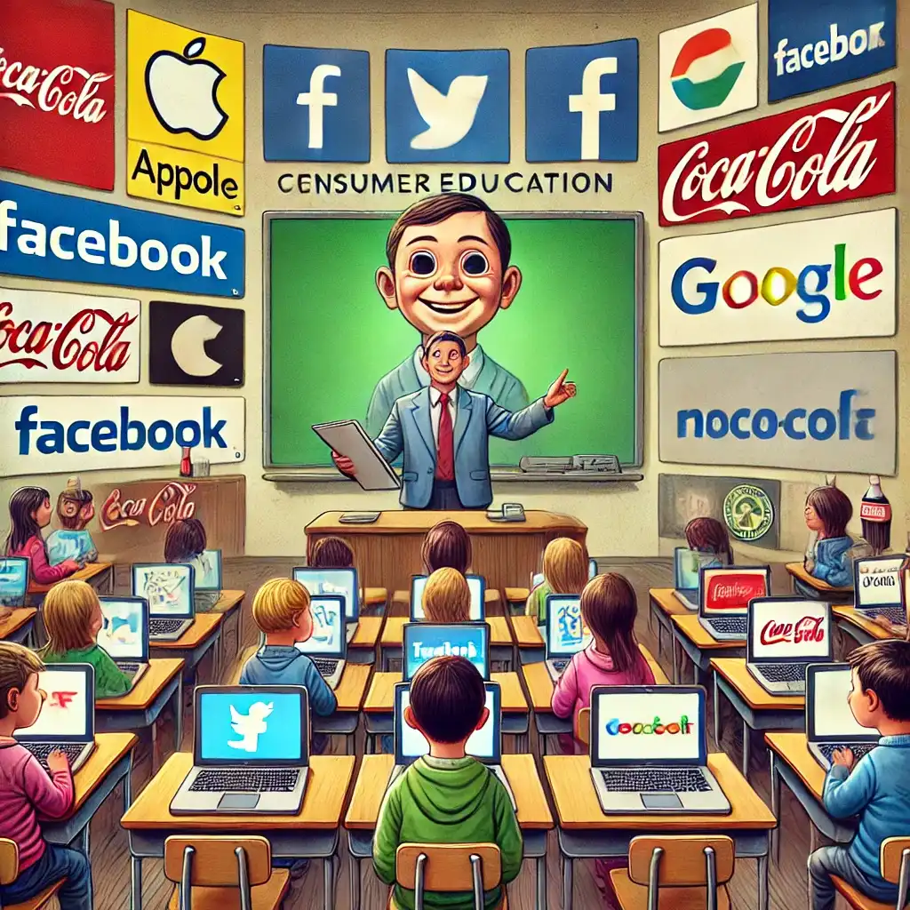

Mustererkennung(A), Trainingsarten, Verstehen von Worten/Sätzen
KI ist mehr als Imitation
GPT ins “Gehirn” geschaut(A)
KI verändert geistiges Arbeiten (10 min)
KI/Mensch Zusammenarbeit
ICT Arbeitsmarkt
körperliche Arbeit als Model der zu erwartenden Transformation für geistige Arbeit?
KI im Schulumfeld (30min)
Chatbots in der Bildung
KI bewusste Pädagogik
AIDu - pädagogische KI-Lernbegleiter
_
Was ist künstliche Intelligenz in 2025?
KI - Intelligenz?
Viele Definitionen für Intelligenz
Intelligenz (ganzheitlich) ist die Hauptfunktion des menschlichen Gehirns, um kognitive Funktionen bereitzustellen, die einem Lebewesen das Überleben in einer feindlichen Umgebung ermöglichen.
Intelligenz (kommerziell) wird benötigt, um Aufgaben zu erledigen, die von geistigen Arbeitern ausgeführt werden.
1000 andere: …
Künstliche Intelligenz
eine Software kann bis zu einem gewissen Grad geistige Arbeit leisten.
Analogie
Ein künstliches Herz ersetzt ein menschliches Herz. Ja/Nein
Aus Worten werden Vektoren (embeddings) erzeugt die wiederum von neuronalen Netzen wie LLMs/GPTs interpretiert und zu einem finalen Embeddings (Vektor) umgewandelt werden.
GPT: General Pre-trained Transformer
Large Language Model
Hat man erstmals ein Model das ein Wort vorhersagen kann, so wird daraus ein Text…
Erste Untersuchungen über KI/Mensch Zusammenarbeit
758 consultants
4867 software developers
sehen 25-40% Zunahme der Produktivität: skales with detached (-), delegating (+) or immersive usage (++)
KI in der Forschung
Ein Team von Wissenschaftlern hat eine chemische KI entwickelt, die in der Lage ist, Moleküle zu entwerfen, die auf dem Mars Sauerstoff produzieren könnten. Dazu hat sie Marsproben analysiert und zerlegt, mehr als 3,7 Millionen mögliche Moleküle für die Spaltung von Wasser und die Bildung von Sauerstoff auf dem Roten Planeten identifiziert und die 234 besten Kandidaten durch Synthese charakterisiert. Dies würde etwa 2.000 Jahre menschlicher Arbeit erfordern, schreiben die Autoren der Studie.
University of Science and Technology of China
ICT Arbeitsmarkt
Nicole Helmer, Vice President & Global Head of Development Learning bei SAP
Neben dem unbestreitbaren Bedarf an einer verantwortungsvollen KI-Entwicklung und einer breiten KI-Kompetenz in sämtlichen IT-Berufen müssenalle Mitarbeitenden ihre übergeordneten Fähigkeiten wie kritisches Denken, Kreativität und komplexes Problemlösen verbessern.
Study: “The Transformational Opportunity of AI on ICT Jobs”: Accenture,Cisco, Eightfold, Google, IBM, Indeed, Intel, Microsoft and SAP.
Freelancer Market
Harvard Business Review: Research: How Gen AI Is Already Impacting the Labor Markets
After the introduction of ChatGPT, there was a 21% decrease in the weekly number of posts in automation-prone jobs compared to manual-intensive jobs. Writing jobs were affected the most (30.37% decrease), followed by software, app, and web development (20.62%) and engineering (10.42%).
körperliche Arbeit
1900
2024
als Model der zu erwartenden Transformation für geistige Arbeit?
“…. Auchkonkrete Unterrichtskonzepte und -materialienfür die Thematisierung der Toolnutzung sind gefragt. Die Ergebnisse dieserStudie [über Deepl/LEO Nutzung]legen nahe, dass es sinnvoll wäre, die Lernenden dieser Stufe im kritischen Umgang mit Übersetzungstools zu schulen, um sie gewinnbringender und lernförderlicher in der fremdsprachigen Kommunikation einzusetzen.”
Unterschiedliche Hausaufgaben zur Mathe Prüfungsvorbereitung
Gruppe 1: Basis - traditionell
Gruppe 2: +48% - ChatGPT
Gruppe 3: +127% - einfacher sokratischer GPT-Tutor (nicht adaptiv)
Prüfung über den Lernstoff
ChatGPT Gruppen sind schlechter als die traditionelle Gruppe
GTP-Tutor Gruppe erzielt gleiche Ergebnisse wie die traditionelle Gruppe
Student:innen & KI?
Anthropic Education Report: How University Students Use Claude AI
Students primarily use AI systems for creating (using information to learn something new) and analyzing (taking apart the known and identifying relationships), such as creating coding projects or analyzing law concepts. This aligns with higher-order cognitive functions on Bloom’s Taxonomy.
This raises questions about ensuring students don’t offload critical cognitive tasks to AI systems.
Comparing the percentage of Claude.ai student conversations that are related to an National Center for Education Statistics in 1 Mio dialogues.
KI Nutzung
Mit KI können wir auf sehr unterschiedliche Weise umgehen.
Lernende können:
Sich Bilden: Sie erzeugen auf Augenhöhe zusammen mit KI neue Inhalte und Ideen und bauen so Kompetenzen auf <==<
Optimieren: Sie automatisieren den Umgang mit Information/Wissen mithilfe von KI
Reproduzieren: Sie übernehmen KI generierte Inhalte ohne dass sie diese verstehen oder hinterfragen
KI bewusste Pädagogik
Es braucht Methodik um die Vorteile von KI pädagogisch zu nutzen. KI:
bringt Kapazität für individuelle Förderung
ermöglicht Schöpfungstiefe durch komplexere Aufgabenstellungen
fördert Durchdringung durch direkten Start an der Kompetenzgrenze
zielt auf tiefes Wissen durch Vernetzung von Wissen und Kompetenzen
motiviert durch lebensnahes, exploratives Lernen von komplexen Zusammenhängen
DALL·E 3: Education as Exploration
Das bedeutet eine enge Lernbegleitung durch Lehrpersonen und Tools
Ansprüche 21 Jahrhundert
Der Kompetenzbegriff nach Weinert
Kompetenzen bezeichnen „die bei Individuen verfügbaren oder durch sie erlernbaren kognitiven Fähigkeiten und Fertigkeiten, um bestimmteProbleme zu lösen, sowie die damit verbundenen …Bereitschaften, damit die Problemlösungen invariablen Situationenerfolgreich und verantwortungsvoll genutzt werden können.“
Quelle: Weinert (Hrsg.) Leistungsmessungen in Schulen; 2001
Welche KI Lernsituationen?
Eine individuelle KI unterstütze Lernsituation kreiert intrinsische Motivation bei den Lernenden, Kompetenzen aufzubauen und zu erproben, und nicht diese zu simulieren.
AFS Flugagentur - Leipzig - Markranstädt - Flugsimulator - Airbus A320 - Professional
_
Echte KI/Mensch Zusammenarbeit
Wie lösen wir komplexe Aufgaben mit KI durch einen Dialog auf Augenhöhe?
Deep Tasks
Schüler:innen arbeiten in Gruppen an einer komplexen Aufgabe, die durch “cut&paste” nicht von KI gelöst werden kann.
KI unterstützt die Schüler:innen bei der Lösung
Der Plan zu Lösung muss von den Schüler:innen kommen
Die Schüler:innen müssen den letzten Schritt verstehen haben, um in den Nächsten einzusteigen
Wird die KI zu schlecht geführt, sind die Ergebnisse schlecht
Wir zeichnen ein Comic
Comic Zeichnen ist richtig aufwendig. ChatGPT kann uns dabei helfen. Die Story muss aber von uns kommen.
Storyline: Die Geschichte in einem Satz.
Storyboard: Wie sieht die Geschichte aus?
Bildbeschreibung: Was ist auf den einzelnen Bildern zu sehen?
Dialoge: Was sagen die Figuren?
Zeichnungen: Zeichne jeweils ein Bild (Panel) mit KI.
Zusammenfügen: In einem Graphikprogram, füge die Bilder und Dialoge zusammen.
ChatGPT ist nicht wirklich gut in Kreuzworträtseln. Wir auch nicht. Gemeinsam schaffen wir es vielleicht.
Aufgabe
1 - Sammlungsaffiner Sehenswerturteiler 2 - Schmiegt sich, letztendlich damenhaft, an Wüstenregionen 3 - Passt zwischen Jung und Fahrt, auch wenn die gar nicht so weit geht 4 - Ungewöhnlich sichtbares Obst? Vergleichsweise Wohlgehüteter! 5 - Auf manch legerer <6 senkrecht: Feier> werden ihre Achtel in die Runde gegeben 6 - Wäre 2025 angemessen für Schweitzers 150. Oder Kehlmanns 50, 7 - Tierische Ausgrenzung 8 - Sterben müssen bleibe mir <3 senkrecht: fern>, doch tot sein – das ist mir … (Epicharm) 9 - Der ganze Mai liegt in ihren Zeichen, Wörtern, Sätzen, Seiten 10 - Soziale Bewegungform 11 - Darin treffen sich die Größten der Großen zum Ballspielen, aber nur kurz 12 - Ende der Welt, mit dem Wolfgang Amadeus’ Vater mitunterschrieb 13 - Mahnmal der Verwundbarkeit
Wir haben ein schwieriges Mathematikproblem. ChatGPT soll uns dabei helfen. ChatGPT stösst an seine Grenzen. Wir auch. Wir probieren es gemeinsam.
Aufgabe
Nina hat einen Kreis mit 20 Punkten in 20 gleich lange Kreisbögen geteilt. Sie zeichnet alle Sehnen ein, die zwei dieser Punkte verbinden. Wie viele dieser Sehnen sind länger als der Radius, aber kürzer als der Durchmesser des Kreises?
„The role of the teacher is to create the conditions for invention rather than provide ready-made knowledge.“
Schüler von Jean Piaget und Mitbegründer des MIT Media Lab. Er entwickelte die Programmiersprache Logo und das Konzept des „Konstruktivismus“.
Was ist das Problem?
KI im Schulumfeld ist per se nicht förderlich
KI Technologie reduziert Durchdringung
verleitet zu Kompetenzsimulation
reduziert die Notwendigkeit von Wissen durch schnelle Verfügbarkeit von Information
Miss- und Fehlinformation sind leichter verfüg-/erzeugbar
ChatBots verführen zu Plagiat und Betrug
Führt zur fehlerhaften Selbsteinschätzung der eigenen Kompetenz
Aber KI ist Realität. Daher ist Wegschauen ist keine Lösung!

DALL·E 3: Consumer Education
Sprach-KI ist etabliert
OpenAI hat über 300 Mio wöchentliche Nutzer weltweit. Schweiz:
DALL·E 3: Social Media Rabbit Hole an AI Application
Wie versteht KI Sätze? 2/2
Steckt in einem Vektor Embedding wirklich eine Bedeutung?
Vektorrepräsentationen von kann in die Ausgangssätze mittels NN zurückverwandeln
Kombinationen von Vektoren erzeugen sinngemässe die Kombination dieser Sätze
Language Model Inversion (ICLR 2024), J.X. Morris et.al
Mehrdeutigkeit @!?
Ein Wort, zwei Bedeutungen
Ein Wort hat zunächst nur eine Bedeutung (embedding).
Um Text realistisch zu bearbeiten, müssen Worte im Kontext prozessiert werden.
Beispiel: bank (Geldinstitut), bank (Ufer)
Das Wort im Kontext
Ein neuronal Netz analysiert die Beziehungen der Worte im Kontext (Satz, Paragraph, Buch)
Daraus lernt es das wahrscheinlichste Wort vorherzusagen.
Beispiel: river, bank
LLMs <> Gehirn?
This study shows that neural activity in thehuman brain aligns linearlywith the internal contextual embeddings of speech and language withinlarge language models (LLMs)as they process everyday conversations.
Nature Human Behaviour - 2025/03/07 - Goldstone, A., et al. - A unified acoustic-to-speech-to-language embedding space captures the neural basis of natural language processing in everyday conversations
Digitale Transformation
Geistige Tätigkeiten befindet sich in einem tiefgreifenden Wandel.
19. Jahrhundert
21. Jahrhundert
Was heisst das für uns, für die Schule, für den Unterricht?